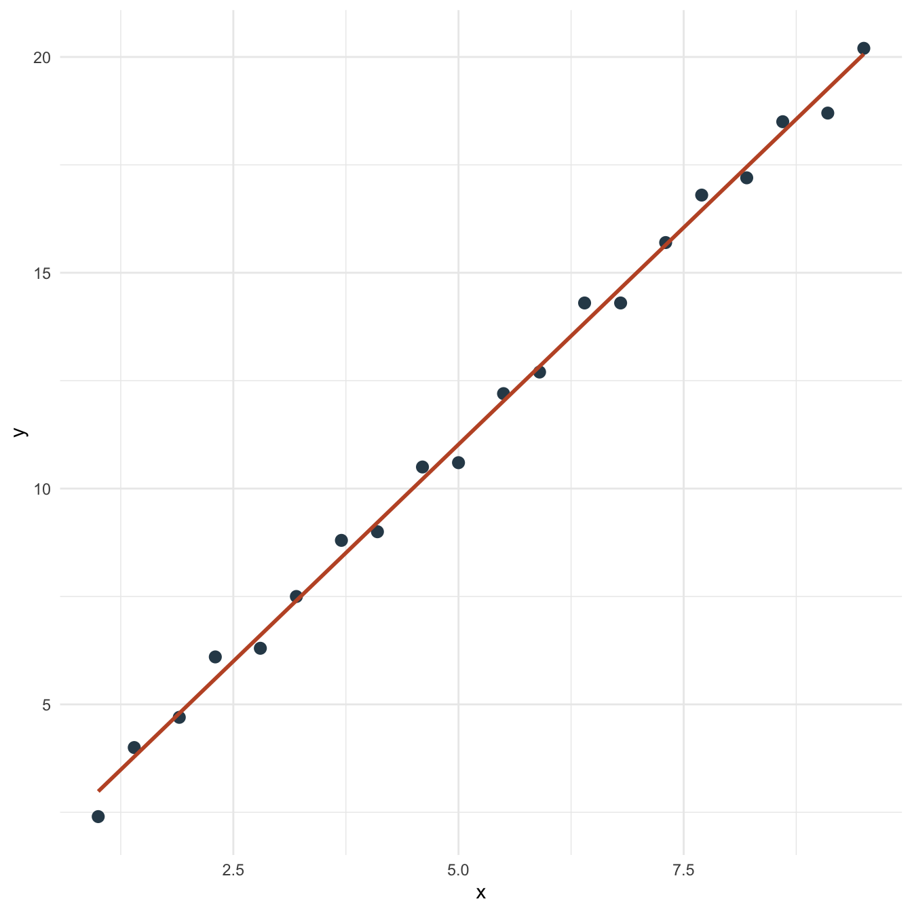
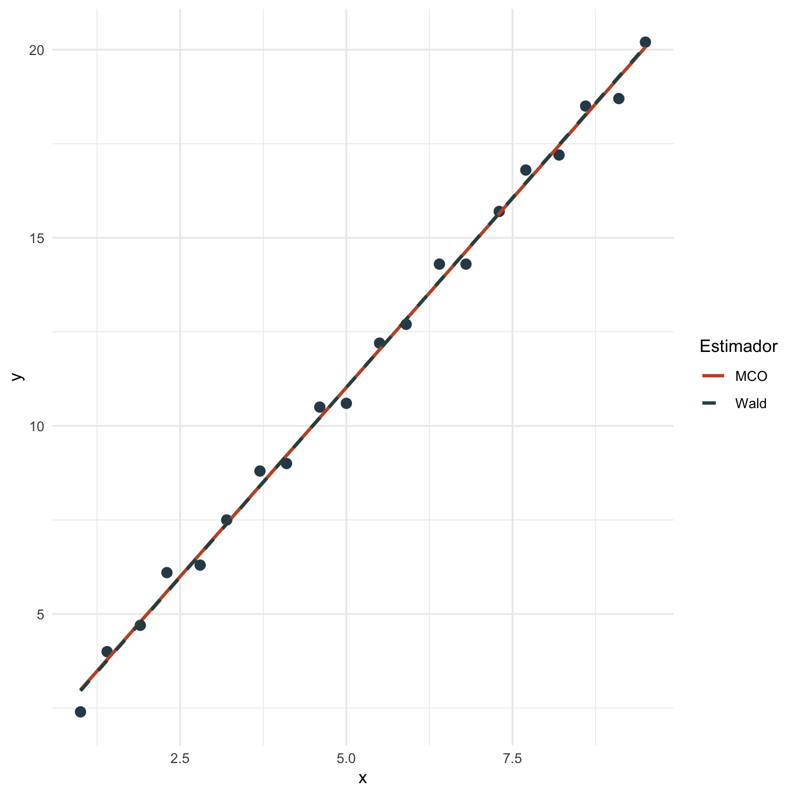

Propiedades de MCO: práctica
Objetivos de la práctica
Al finalizar esta práctica podrás:
- Estimar MCO y un estimador lineal alternativo sobre la misma base.
- Comparar coeficientes, SRC y errores estándar.
- Reproducir los cálculos principales en R, Stata y Python.
- Interpretar por qué Gauss-Markov habla de varianza dentro de una clase de estimadores.
Pregunta aplicada
Queremos comparar el estimador de MCO con un estimador tipo Wald que divide la muestra en dos grupos según si \(x\) está por encima de la mediana.
El estimador de Wald usa menos información que MCO: resume la relación entre \(x\) e \(y\) con dos medias de grupo. MCO usa toda la variación continua de \(x\).
Datos
Usaremos una base determinística generada por una relación lineal con pequeñas desviaciones.
| x | ajuste | y |
|---|---|---|
| 1.0 | -0.6 | 2.4 |
| 1.4 | 0.2 | 4.0 |
| 1.9 | -0.1 | 4.7 |
| 2.3 | 0.5 | 6.1 |
| 2.8 | -0.3 | 6.3 |
| 3.2 | 0.1 | 7.5 |
| 3.7 | 0.4 | 8.8 |
| 4.1 | -0.2 | 9.0 |
| 4.6 | 0.3 | 10.5 |
| 5.0 | -0.4 | 10.6 |
| 5.5 | 0.2 | 12.2 |
| 5.9 | -0.1 | 12.7 |
| 6.4 | 0.5 | 14.3 |
| 6.8 | -0.3 | 14.3 |
| 7.3 | 0.1 | 15.7 |
| 7.7 | 0.4 | 16.8 |
| 8.2 | -0.2 | 17.2 |
| 8.6 | 0.3 | 18.5 |
| 9.1 | -0.5 | 18.7 |
| 9.5 | 0.2 | 20.2 |

Figura 11: Relación entre x e y en la práctica de propiedades de MCO
Estimación en R
Estimamos MCO y calculamos un estimador de Wald basado en dos grupos.
| estimador | intercepto | pendiente | SRC |
|---|---|---|---|
| MCO | 0.9740 | 2.0097 | 2.1648 |
| Wald por grupos | 0.9433 | 2.0156 | 2.1694 |

Figura 12: Rectas estimadas por MCO y por el estimador de Wald
Interpretación
La pendiente de MCO es 2.010, mientras que la pendiente de Wald es 2.016. En esta muestra, MCO tiene una SRC de 2.165 y Wald una SRC de 2.169.
MCO minimiza la SRC por construcción, por eso su SRC no puede ser mayor que la de otra recta estimada sobre la misma muestra. Gauss-Markov es un resultado distinto y más fuerte: habla de la varianza de los estimadores en muestras repetidas dentro de la clase de estimadores lineales insesgados.
Una comparación en una sola muestra ilustra la mecánica, pero no demuestra por sí sola un resultado de muestras repetidas. La propiedad MELI se refiere a la distribución del estimador bajo el proceso de muestreo.
Estimación en Stata
El mismo ejercicio puede reproducirse en Stata:
clear
input x ajuste
1.0 -0.6
1.4 0.2
1.9 -0.1
2.3 0.5
2.8 -0.3
3.2 0.1
3.7 0.4
4.1 -0.2
4.6 0.3
5.0 -0.4
5.5 0.2
5.9 -0.1
6.4 0.5
6.8 -0.3
7.3 0.1
7.7 0.4
8.2 -0.2
8.6 0.3
9.1 -0.5
9.5 0.2
end
gen y = 1 + 2 * x + ajuste
reg y x
predict yhat_mco, xb
predict resid_mco, resid
gen src_mco_piece = resid_mco^2
summ src_mco_pieceLos resultados esperados son los mismos coeficientes que Stata debe reproducir si usa la misma base y especificación:
| Término | Estimación aproximada | Error estándar aproximado |
|---|---|---|
| Constante MCO | 0.974 | 0.175 |
| Pendiente MCO | 2.010 | 0.030 |
| Pendiente Wald | 2.016 | |
| \(R^2\) MCO | 0.996 |
Estimación en Python y Google Colab
Para correr esta práctica en Google Colab:
Luego estima:
import pandas as pd
import statsmodels.formula.api as smf
datos_prop = pd.DataFrame({
"x": [1.0, 1.4, 1.9, 2.3, 2.8, 3.2, 3.7, 4.1, 4.6, 5.0,
5.5, 5.9, 6.4, 6.8, 7.3, 7.7, 8.2, 8.6, 9.1, 9.5],
"ajuste": [-0.6, 0.2, -0.1, 0.5, -0.3, 0.1, 0.4, -0.2, 0.3, -0.4,
0.2, -0.1, 0.5, -0.3, 0.1, 0.4, -0.2, 0.3, -0.5, 0.2]
})
datos_prop["y"] = 1 + 2 * datos_prop["x"] + datos_prop["ajuste"]
modelo = smf.ols("y ~ x", data=datos_prop).fit()
print(modelo.summary())
mediana_x = datos_prop["x"].median()
alto = datos_prop["x"] > mediana_x
beta_wald = (
datos_prop.loc[alto, "y"].mean() - datos_prop.loc[~alto, "y"].mean()
) / (
datos_prop.loc[alto, "x"].mean() - datos_prop.loc[~alto, "x"].mean()
)
print(beta_wald)Los resultados esperados son los mismos coeficientes que Python debe reproducir si usa la misma base y especificación:
| Término | Estimación aproximada | Error estándar aproximado |
|---|---|---|
| Constante MCO | 0.974 | 0.175 |
| Pendiente MCO | 2.010 | 0.030 |
| Pendiente Wald | 2.016 | |
| \(R^2\) MCO | 0.996 |
Comparación R, Stata y Python
Los tres programas estiman la misma recta de MCO si usan la misma base. El estimador de Wald debe calcularse con la misma regla de división de grupos para que sea comparable.
| Tarea | R | Stata | Python |
|---|---|---|---|
| Estimar MCO | lm(y ~ x) |
reg y x |
ols("y ~ x") |
| Valores ajustados | fitted(modelo) |
predict yhat, xb |
.fittedvalues |
| Residuos | resid(modelo) |
predict resid, resid |
.resid |
| Grupo alto | x > median(x) |
x > r(p50) con summ, detail |
x > x.median() |
Errores frecuentes en la práctica
- Confundir SRC muestral con varianza en muestras repetidas. MCO minimiza la SRC en una muestra; Gauss-Markov compara varianzas de estimadores.
- Creer que MELI significa mejor siempre. El resultado se limita a estimadores lineales e insesgados.
- Comparar estimadores sobre datos distintos. La comparación solo tiene sentido con la misma base.
- Olvidar la regla del estimador alternativo. El estimador de Wald depende de cómo se formen los grupos.
Ejercicios computacionales
- Cambia el punto de corte del estimador de Wald del percentil 50 al percentil 40. ¿Cómo cambia la pendiente?
- Agrega una observación extrema en \(x\). ¿Qué ocurre con MCO y con Wald?
- Calcula la SRC de ambas rectas manualmente.
- Repite el ejercicio en Stata y Python. Verifica que los coeficientes coincidan con R.
- Explica por qué una sola muestra no basta para demostrar Gauss-Markov.